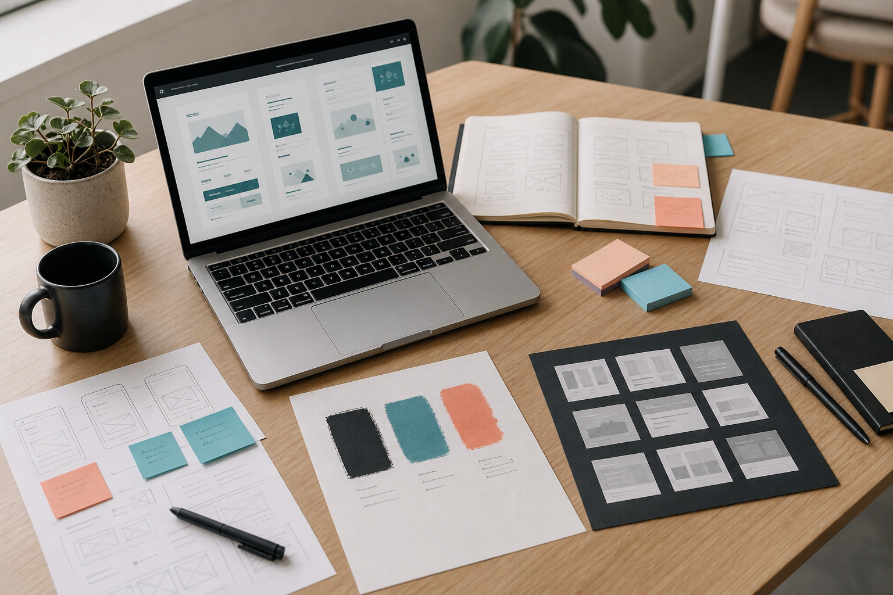

UX research / app design
Student Wellbeing Support App
A mobile experience helping students find relevant support faster through clearer content hierarchy, calmer journeys, and tested interaction patterns.

Selected Work
Replace these with university, freelance, placement, or self-directed projects. Aim to show the problem, your role, your decisions, and the outcome.
UX research / app design
A mobile experience helping students find relevant support faster through clearer content hierarchy, calmer journeys, and tested interaction patterns.
Web design / front end
A responsive site concept balancing brand warmth with practical tasks: opening hours, menus, bookings, accessibility, and local search visibility.
Service design / UX strategy
A redesign of a multi-step booking journey using task analysis, simplified forms, clearer states, and a more predictable confirmation flow.
Process
Frame the problem, audience, constraints, goals, and success measures.
Map journeys, content, flows, and information architecture before polishing screens.
Build responsive layouts, interaction states, components, and clickable prototypes.
Test assumptions, improve clarity, document changes, and refine the final experience.
About
I recently graduated with a degree in Web and UX Design. My work sits between research, interaction design, visual systems, and front-end implementation. I enjoy making messy information feel navigable and turning early ideas into interfaces people can actually use.
I am currently looking for junior UX, product design, web design, or front-end roles where I can keep learning while contributing thoughtful, well-made work.
Contact